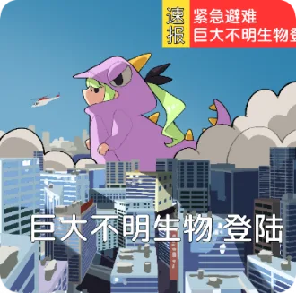

地图官方原文 ↗
十字路口站
联合城的中城区同样是行政中心，中城大学坐落于此。此外，联盟议会和异常调查处（UAID）等机关也设于此地。商业活动不及凰区活跃，但仍是城市最繁忙的区域之一。该区域毗邻北区、运河区、凰区和临浜区，地理位置十分便利。

联合城的中城区同样是行政中心，中城大学坐落于此。此外，联盟议会和异常调查处（UAID）等机关也设于此地。商业活动不及凰区活跃，但仍是城市最繁忙的区域之一。该区域毗邻北区、运河区、凰区和临浜区，地理位置十分便利。


 小怪兽登陆
小怪兽登陆 小怪兽登场，领先的玩家要小心咯~
小怪兽登陆
小怪兽登陆 小怪兽登场，领先的玩家要小心咯~